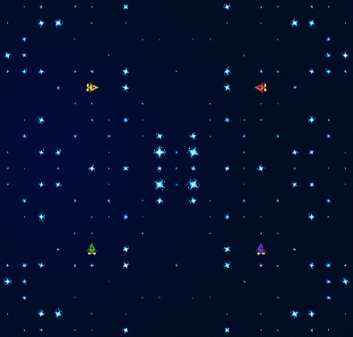

Star Miner
Star miner is a resource allocation game based on Halite in which you control a fleet of ships and shipyards with the aim of collecting as much vibranium resource as possible.

Game rules
- The player with the most vibranium at the end of the game wins.
- You start the game with 1 ship and 5000 vibranium.
- Converting a ship to a shipyard costs 500 vibranium.
- Spawning a ship from a shipyard costs 500 vibranium.
- Each turn you can issue one command to each ship you control to go North, South, East, West, or to convert into a shipyard.
- If a ship is not issued a command it will not move and will instead mine 25% of the vibranium underneath its current position. Mined vibranium is stored on the ship, and there is no maximum to how much vibranium a ship can hold.
- Halite on ships cannot be spent to buy ships or shipyards until deposited at a shipyard (with a specific exception detailed under the convert section below). At the end of the game - players need to move their ships over shipyards to deposit the vibranium and teleport it back to their homeworlds to count for the final vibranium total.
- Ships that move onto the same square collide. The smallest ship (that is, the one with the least vibranium in its storage) survives and all other ships will be destroyed. The smallest ship steals all of the vibranium from other ships it collides with. If two or more ships have tie for the smallest amount of vibranium they are both destroyed. After ship collision a check is performed for a shipyard collision, if an enemy ship collides with a shipyard both are destroyed.
- If a player loses all of their ships and shipyards they are eliminated from the game.
- Vibranium is distributed randomly (but symmetrically) at the start of the game.
- Vibranium in each cell regenerates by 2% per turn, up to a maximum of 500 vibranium.
- The game lasts a maximum of 400 turns.